| Student | Cristi Miloiu (Master IISC, UPB-ETTI) |
|---|---|
| Caz N (b) | N = 27 – conf. dr. ing. Bogdan Cristian Florea (UPB-ETTI, dep. EAII) |
| Coordonator | prof. dr. ing. Radu Rădescu |
| Data colectării datelor | 07.11.2026 (raport generat la 07.11.2026) |
Indicele h a fost propus de J. E. Hirsch (2005): un cercetător are indicele h dacă h dintre cele Np lucrări ale sale au fiecare cel puțin h citări, iar celelalte (Np − h) lucrări au cel mult h citări fiecare. Procedura de calcul:
Indicatori asociați folosiți în raport: i10-index (numărul de lucrări cu ≥ 10 citări, specific Google Scholar), numărul total de citări și media citărilor pe articol.
În momentul redactării nu am lucrări publicate în surse indexate WoS sau Scopus. Google Scholar a indexat automat lucrarea „Sistem dedicat pentru achiziția și procesarea avansată a semnalelor audio folosind un ESP32” (C. Miloiu, C. Colacel, 2024), găsită de robotul său pe site-ul personal; am adăugat manual lucrarea de licență (2025). Niciuna nu are încă citări. Prin urmare, căutarea de sine în WoS și Scopus nu returnează un profil de autor, iar h-index = 0 în toate variantele (cu și fără autocitări). Conform enunțului, conținutul WoS/Scopus nu poate fi introdus de autor, ci este indexat automat după publicarea în surse recunoscute.
| Variantă | Cont / identificator | Lucrări | Citări | h-index | h fără autocitări |
|---|---|---|---|---|---|
| 1. Google Scholar | https://scholar.google.com/citations?user=MUFLqowAAAAJ | 2 | 0 | 0 | 0 |
| 2. Web of Science | ResearcherID: RLL-5085-2026 | 0 | 0 | 0 | 0 |
| 3. Scopus | Author ID: de completat | 0 | 0 | 0 | 0 |
| B. ResearchGate | https://www.researchgate.net/profile/Cristi-Miloiu | 4 | 0 | 0 | 0 |
Reprezentarea grafică pe articole este degenerată (nicio lucrare cu citări): curba citărilor coincide cu axa absciselor, deci intersecția cu dreapta citări = rang are loc în origine (h = 0).
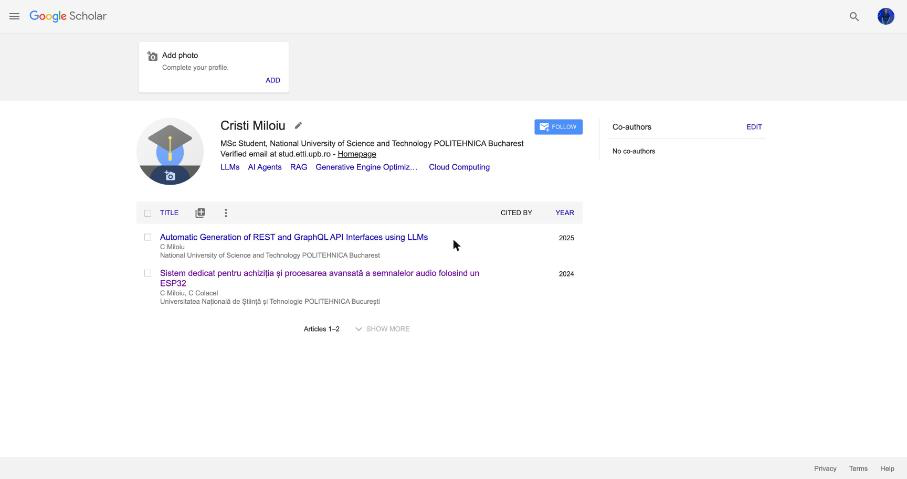
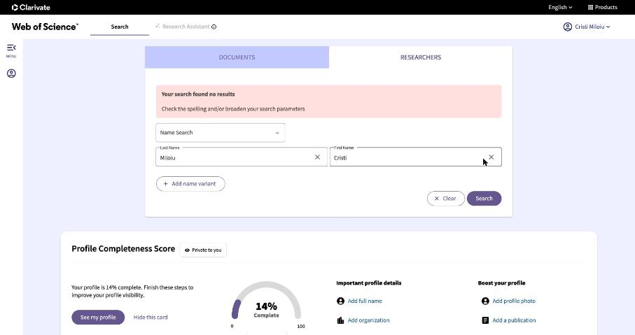
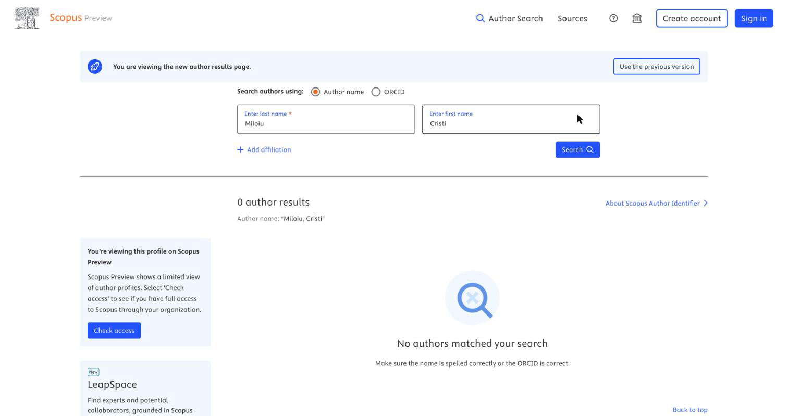
Profilul public al cercetătorului: Google Scholar https://scholar.google.com/citations?user=y4Ho9CIAAAAJ · ORCiD 0000-0002-1113-6400 · Scopus Author ID 35315667300 (declarat în ORCiD) · ResearchGate https://www.researchgate.net/profile/Bogdan-Florea. Domenii: automatică, sisteme hibride, blockchain & IoT, arhitecturi software, optimizare.
Recalculând h-ul din lista de 36 lucrări (Anexa A1) obținem h = 10: a 10-a lucrare are 11 citări (≥ 10), iar a 11-a are 10 citări (< 11). Google Scholar nu oferă o opțiune de excludere a autocitărilor; am estimat varianta fără autocitări scăzând autocitările identificate în OpenAlex pentru aceleași titluri (barele roșii din Fig. 1): h fără autocitări ≈ 10. Valoarea este robustă deoarece lucrările de la limita nucleului (rangurile 9–11) nu au autocitări identificate.
Evoluția anuală arată o creștere aproape monotonă a impactului începând cu 2018 (lucrările despre blockchain și IoT), cu un maxim de 131 de citări în 2025; valoarea pentru 2026 este parțială (an în curs).
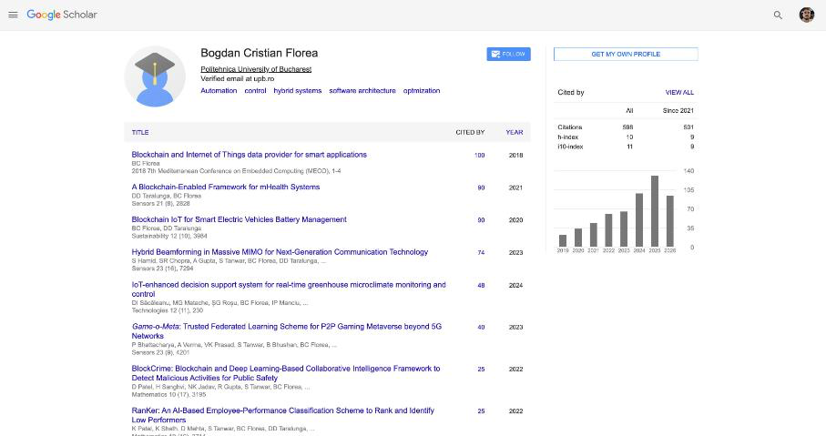
| Documente | Citări | Citări fără autocitări | h-index | h fără autocitări |
|---|---|---|---|---|
| 29 | 232 | de completat | 8 | de completat |
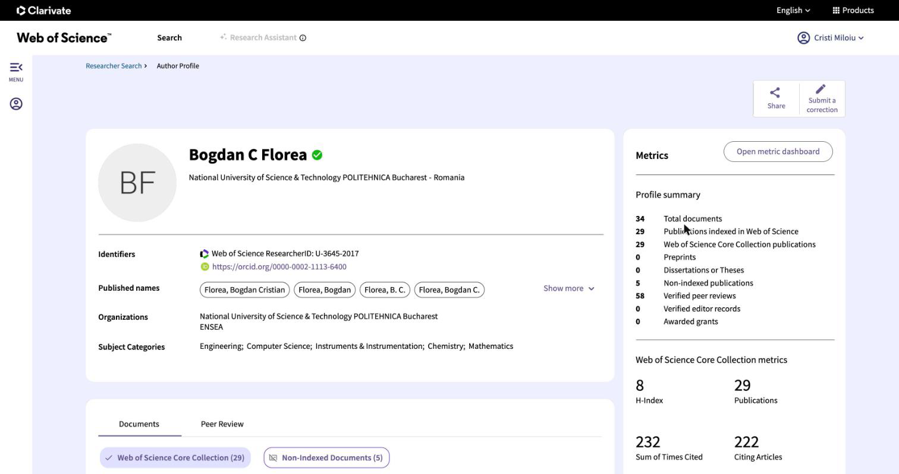
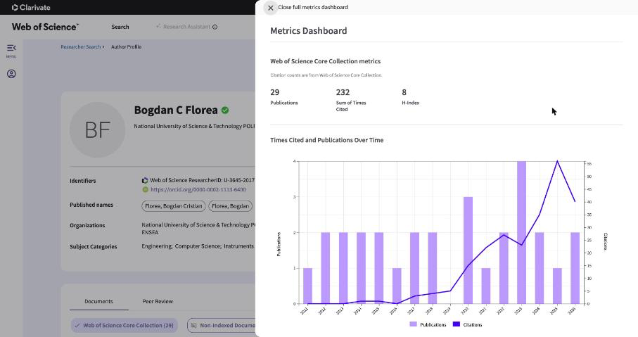
| Documente | Citări | Citări fără autocitări | h-index | h fără autocitări |
|---|---|---|---|---|
| 33 | 427 | de completat | 10 | de completat |
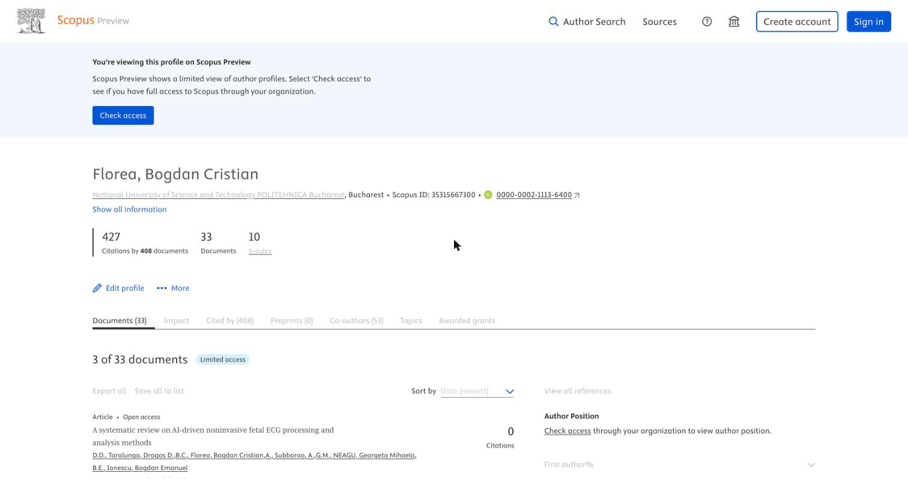
| Publicații | Citări | Citiri | Research Interest | h-index | h fără autocitări |
|---|---|---|---|---|---|
| 32 | 504 | 21384 | 314.5 | 10 | de completat |
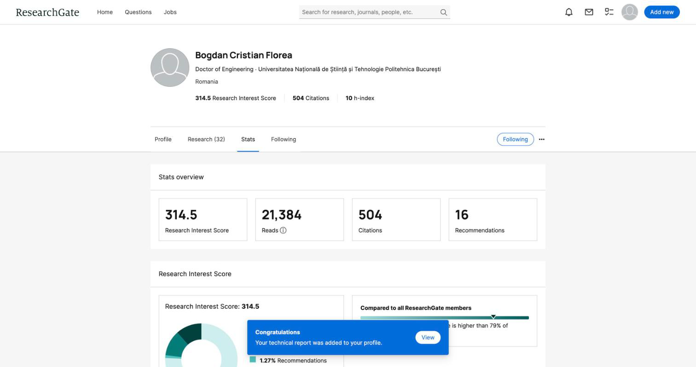
Pentru a putea calcula transparent varianta fără autocitări din date publice, am folosit OpenAlex (autor A5054838804, identificat prin ORCiD). Pentru fiecare lucrare au fost descărcate toate lucrările care o citează și s-a verificat dacă autorul N apare printre autorii lucrării citante (definiția strictă a autocitării).
Ponderea autocitărilor este foarte mică (2,3%), concentrată pe lucrările mai vechi (sisteme hibride, choppere multicelulare, oscilatorul Alpazur), ceea ce indică un impact generat în principal de citări externe. Eliminarea lor nu modifică h-index-ul.
Ordinea de lucru urmată: (1) cont ORCiD – identificatorul persistent care interconectează celelalte rețele; (2) cont ResearchGate legat de ORCiD, cu importul/introducerea contribuțiilor; (3) profil Publons (în prezent Web of Science Researcher Profile) cu ResearcherID, conectat la ORCiD pentru sincronizarea lucrărilor și a activității de recenzare. Conturile au fost create cu adresa instituțională cristi.miloiu@stud.etti.upb.ro.
| Rețea | Identificator / URL | Observații |
|---|---|---|
| A. ORCiD | 0009-0001-1687-9158 (https://orcid.org/0009-0001-1687-9158) | Educație, angajare, lucrări, proiecte; legat de RG, Publons și Scopus |
| B. ResearchGate | https://www.researchgate.net/profile/Cristi-Miloiu | Conectat cu cercetătorul N = 27 (Follow) |
| C. Publons / WoS Researcher | RLL-5085-2026 | ResearcherID; sincronizare ORCiD ↔ WoS |
| Scopus | de completat | Profil generat automat numai după prima lucrare indexată |
| Publicații | Citiri | Citări (total / medie) | Recomandări | Urmăritori / urmăriți | Întrebări-răspunsuri | Research Interest | RG Score |
|---|---|---|---|---|---|---|---|
| 4 | de completat | 0 | de completat | de completat / 1 | de completat | de completat | de completat |
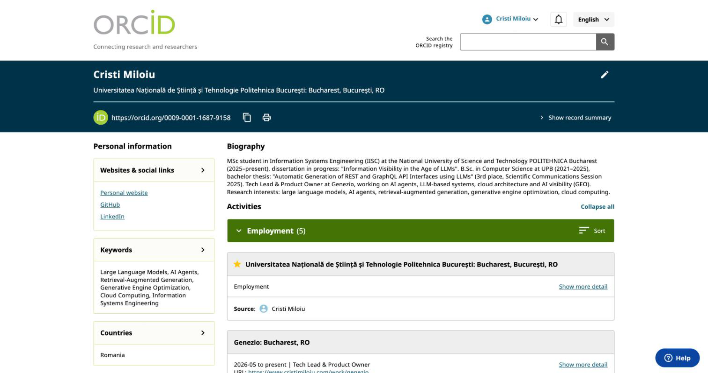
screenshots/a_researchgate_stats.png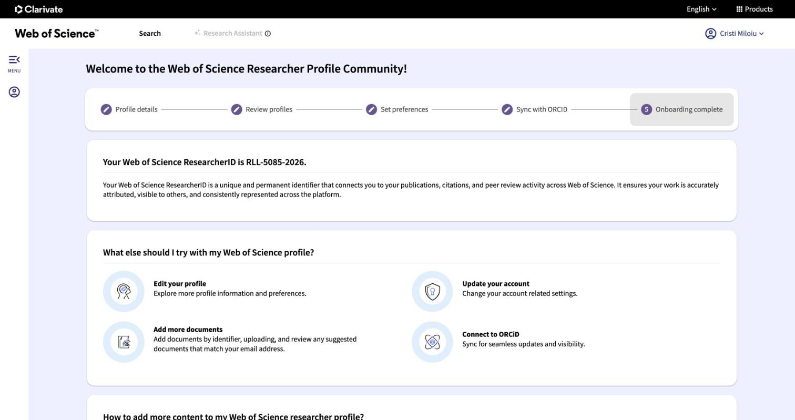
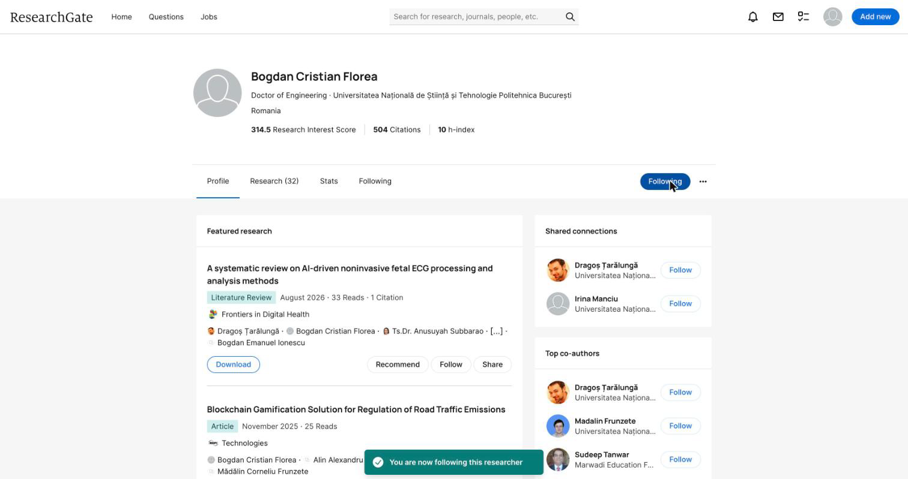
O autocitare este o citare dintr-o lucrare la care autorul evaluat este (co)autor. Scopus („Exclude self citations”) și WoS („Citation report without self-citations”) permit eliminarea lor; Google Scholar și ResearchGate nu. Autocitările pot umfla artificial h-index-ul mai ales la lucrările de la limita nucleului h. În cazul N = 27, analiza pe OpenAlex arată doar 10 autocitări din 443 (2,3%), iar h-index-ul rămâne neschimbat (9 → 9); prin urmare valoarea semnificativă este h = 9–10 în funcție de baza de date.
Cazul N reprezintă rezultatul a peste 15 ani de activitate (prima lucrare în 2010), cu un salt de impact după orientarea spre blockchain/IoT, publicat în reviste MDPI cu acces deschis (Sensors, Sustainability) – ceea ce crește vizibilitatea și numărul de citări. Pentru cazul personal, punctul de plecare este h = 0; vizibilitatea poate fi construită prin ORCiD + ResearchGate, prin diseminarea lucrării de licență/disertației și prin publicarea la conferințe indexate.
Rândurile verzi formează nucleul h. „Autocit.” = autocitări identificate în OpenAlex pentru același titlu (estimare).
| # | Titlu | An | Citări | Autocit. | Fără autocit. | c ≥ rang |
|---|---|---|---|---|---|---|
| 1 | Blockchain and Internet of Things data provider for smart applications | 2018 | 100 | 4 | 96 | ✔ |
| 2 | A Blockchain-Enabled Framework for mHealth Systems | 2021 | 90 | 90 | ✔ | |
| 3 | Blockchain IoT for Smart Electric Vehicles Battery Management | 2020 | 90 | 1 | 89 | ✔ |
| 4 | Hybrid Beamforming in Massive MIMO for Next-Generation Communication Technology | 2023 | 74 | 74 | ✔ | |
| 5 | IoT-enhanced decision support system for real-time greenhouse microclimate monitoring and control | 2024 | 48 | 48 | ✔ | |
| 6 | Game-o-Meta: Trusted Federated Learning Scheme for P2P Gaming Metaverse | 2023 | 40 | 40 | ✔ | |
| 7 | BlockCrime: Blockchain and Deep Learning-Based Collaborative Intelligence | 2022 | 25 | 25 | ✔ | |
| 8 | RanKer: An AI-Based Employee-Performance Classification Scheme | 2022 | 25 | 25 | ✔ | |
| 9 | Electric Vehicles Battery Management Network Using Blockchain IoT | 2020 | 25 | 25 | ✔ | |
| 10 | MIDI-based controller of electrical drives | 2014 | 11 | 11 | ✔ | |
| 11 | Liquid level control for industrial three tanks system based on sliding mode control | 2015 | 10 | 10 | ||
| 12 | Petri net modeling for hybrid systems control. Application for a multicellular converter | 2013 | 7 | 7 | ||
| 13 | Influence of computer computation precision in chaos analysis | 2013 | 7 | 1 | 6 | |
| 14 | Smartphone input/output interface for IoT applications | 2017 | 6 | 1 | 5 | |
| 15 | A Petri net approach to multicellular chopper control | 2011 | 6 | 6 | ||
| 16 | Smartphone Controlled Autonomous Robotic Platform | 2018 | 5 | 5 | ||
| 17 | Artificial Intelligence Advancements in Fetal Monitoring | 2024 | 4 | 4 | ||
| 18 | Echipamente electronice pentru reglaj automat | 2014 | 4 | 4 | ||
| 19 | An integrated e-learning platform for use in higher education | 2011 | 4 | 4 | ||
| 20 | Discrete event control for multicell choppers driving DC machines | 2010 | 4 | 2 | 2 | |
| 21 | Pulse amplifier used in ultrasonic nondestructive testing | 2017 | 3 | 3 | ||
| 22 | A direct control method for multicellular converters | 2012 | 3 | 3 | ||
| 23 | AutoChain: An Incentive-Based Blockchain System for Air Quality Monitoring | 2023 | 2 | 2 | ||
| 24 | An analogical control method of the Alpazur oscillator | 2015 | 2 | 2 | ||
| 25 | Integrated Platform for Ecosystems Monitoring Based on Remote Sensing | 2020 | 1 | 1 | ||
| 26 | Influence of control type on chaotic behavior of the Alpazur oscillator | 2014 | 1 | 1 | 0 | |
| 27 | Image enciphering by using Rössler Map | 2011 | 1 | 1 | ||
| 28 | Blockchain Gamification Solution for Regulation of Road Traffic | 2025 | 0 | 0 | ||
| 29 | Blockchain-Driven Gamification Solution for Improving Road Traffic Safety | 2024 | 0 | 0 | ||
| 30 | Blockchain Solution for Road Traffic Pollution Monitoring | 2024 | 0 | 0 | ||
| 31 | Automatic real-estate image analysis for retrieval and classification | 2022 | 0 | 0 | ||
| 32 | Petri net control strategy for series multilevel converters | 2016 | 0 | 0 | ||
| 33 | Route to chaos due to power source frequency | 2012 | 0 | 0 | ||
| 34 | A Petri net observer-based control for multicellular choppers | 2011 | 0 | 0 | ||
| 35 | A discrete observer design for multicellular choppers | 2011 | 0 | 0 | ||
| 36 | Multicellular Chopper Control for an Unknown Load | 0 | 0 |
| # | Titlu | An | Citări | Autocit. | Fără autocit. |
|---|---|---|---|---|---|
| 1 | Blockchain IoT for Smart Electric Vehicles Battery Management | 2020 | 77 | 1 | 76 |
| 2 | Blockchain and Internet of Things data provider for smart applications | 2018 | 69 | 4 | 65 |
| 3 | A Blockchain-Enabled Framework for mHealth Systems | 2021 | 66 | 66 | |
| 4 | Hybrid Beamforming in Massive MIMO for Next-Generation Communication Technology | 2023 | 47 | 47 | |
| 5 | Game-o-Meta: Trusted Federated Learning Scheme for P2P Gaming Metaverse beyond 5G Networks | 2023 | 33 | 33 | |
| 6 | IoT-Enhanced Decision Support System for Real-Time Greenhouse Microclimate Monitoring and Control | 2024 | 30 | 30 | |
| 7 | RanKer: An AI-Based Employee-Performance Classification Scheme to Rank and Identify Low Performers | 2022 | 27 | 27 | |
| 8 | Electric Vehicles Battery Management Network Using Blockchain IoT | 2020 | 23 | 23 | |
| 9 | BlockCrime: Blockchain and Deep Learning-Based Collaborative Intelligence Framework to Detect Malicious Activities for Public Safety | 2022 | 22 | 22 | |
| 10 | LIQUID LEVEL CONTROL FOR INDUSTRIAL THREE TANKS SYSTEM BASED ON SLIDING MODE CONTROL | 2015 | 6 | 6 | |
| 11 | Petri net modeling for hybrid systems control. Application for a multicellular converter | 2013 | 5 | 5 | |
| 12 | A Petri net approach to multicellular chopper control | 2011 | 5 | 5 | |
| 13 | MIDI-based controller of electrical drives | 2014 | 5 | 5 | |
| 14 | An integrated e-learning platform for use in higher education | 2011 | 5 | 5 | |
| 15 | Smartphone input/output interface for IoT applications | 2017 | 4 | 1 | 3 |
| 16 | Discrete event control for multicell choppers driving DC machines | 2010 | 4 | 2 | 2 |
| 17 | Smartphone Controlled Autonomous Robotic Platform | 2018 | 4 | 4 | |
| 18 | Artificial Intelligence Advancements in Fetal Monitoring: Enhancing Prenatal Care | 2024 | 3 | 3 | |
| 19 | INFLUENCE OF COMPUTER COMPUTATION PRECISION IN CHAOS ANALYSIS | 2013 | 3 | 1 | 2 |
| 20 | A systematic review on AI-driven noninvasive fetal ECG processing and analysis methods | 2026 | 1 | 1 | |
| 21 | Image enciphering by using Rössler Map | 2011 | 1 | 1 | |
| 22 | Influence of control type on chaotic behavior of the Alpazur oscillator | 2014 | 1 | 1 | 0 |
| 23 | AutoChain: An Incentive-Based Blockchain System for Air Quality Monitoring and Emissions Reduction | 2023 | 1 | 1 | |
| 24 | Integrated Platform for Ecosystems Monitoring Based on Remote and in Situ Measurements | 2020 | 1 | 1 | |
| 25 | An analogical control method of the Alpazur oscillator | 2015 | 0 | 0 | |
| 26 | A discrete observer design for multicellular choppers | 2011 | 0 | 0 | |
| 27 | Petri net control strategy for series multilevel converters using a state observer | 2016 | 0 | 0 | |
| 28 | Automatic Real-Estate Image Analysis for Retrieval and Classification | 2022 | 0 | 0 | |
| 29 | Blockchain Solution for Road Traffic Pollution Monitoring and Regulation | 2024 | 0 | 0 | |
| 30 | Blockchain-Driven Gamification Solution for Improving Road Traffic Safety | 2024 | 0 | 0 | |
| 31 | Blockchain Gamification Solution for Regulation of Road Traffic Emissions | 2025 | 0 | 0 | |
| 32 | A Dynamic-Addressing Protocol for Extensible I2C-Based Device Networks | 2026 | 0 | 0 |